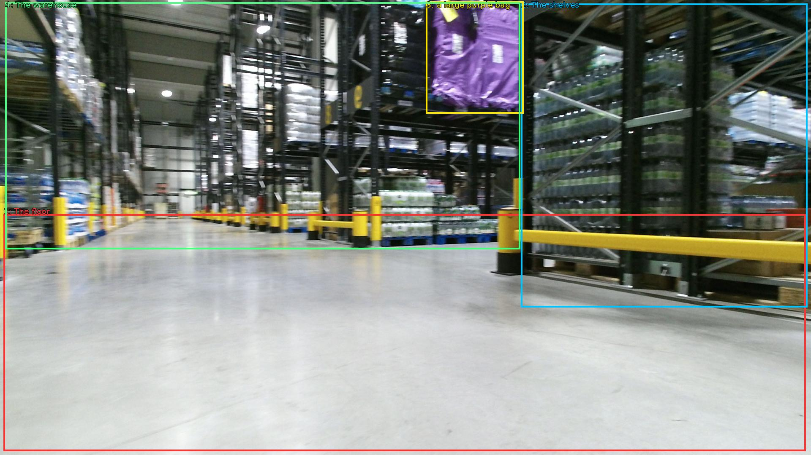

The image shows the interior of a large warehouse with a long, narrow aisle. The floor is made of concrete and the walls are made of metal beams. On the right side of the aisle, there are rows of shelves with various items stored on them. The shelves are filled with different types of items such as bottles, cans, and other household items. In the background, there is a large purple bag hanging from one of the shelves. The warehouse appears to be well-lit with bright lights. The overall atmosphere of the space is industrial and well-organized.

Original · Caption raw · Grounding raw · Koordinate
Številke so lokalni ID regije. Dolge slikovne oznake so skrajšane; spodaj so celotne fraze. Napovedane regije se lahko prekrivajo ali opisujejo skupine.
| ID | Celotna fraza | bbox xyxy |
|---|---|---|
| 1 | The floor | [8.639999389648438, 508.1400146484375, 1907.5198974609375, 1070.820068359375] |
| 2 | The shelves | [1233.5999755859375, 8.100000381469727, 1911.3599853515625, 729.5400390625] |
| 3 | a large purple bag | [1008.9599609375, 3.7800002098083496, 1239.3599853515625, 269.46002197265625] |
| 4 | The warehouse | [12.479999542236328, 5.940000057220459, 1231.679931640625, 591.300048828125] |